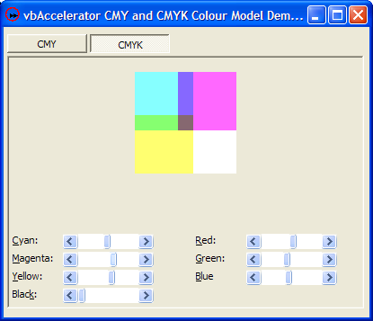

CMY and CMYK Models (20K)
CMY and CMYK Models (20K)
 15 Apr 2004
15 Apr 2004
First Posted

CMY and CMYK Colour Models
Colour images on computer monitors are generated by emitting light, and hence can be generated from a combination of the three colours our eyes respond to. In a printed image, however, the colour you see is a result of the pigment on the printout absorbing proportions of these colours. The CMY and CMYK colour models provide a means to convert colours expressed as proportions of emitted light in R,G,B to the amount of pigment you need to print onto a page to obtain the same colour.
Print Colour Components
In theory, you can generate any print colour by mixing proportions of Cyan, Magenta and Yellow pigments. Cyan absorbs the Red light component, Magenta absorbs the Green light component and Yellow absorbs the Blue component. However, in the real world all pigments are imperfect, and do not completely absorb their complementary colour. One result of this is that blacks created by combining cyan, magenta and yellow tend to appear brown in real life. It is however possible to obtain much more intense blacks using other pigment types, and hence typically printers will also include a black component as well.
The colour models for these two models are known by the component colours, with CMY for Cyan, Magenta and Yellow and CMYK for Cyan, Magenta, Yellow and (ahem) blacK. Calculating the values for these colours is then pretty easy to do.
Calculating CMY
CMY is the easiest of the two colour models to calculate: in fact it is pretty much trivial since the the Cyan, Magenta and Yellow values are just the inverse of the Red, Green and Blue values. Assuming values are normalized between 0 and 1, then the formulae are as follows:
- Cyan = 1 - Red
- Magenta = 1 - Green
- Yellow = 1 - Blue
Reversing these formulae to convert CMY back to RGB is just a matter of swapping the variables. The implementation of this is provided in the cCMY class in the download.
Calculating CMYK
CMYK is pretty much the same as CMY, but the black component needs to be taken into account. The following formulae are used:
- Black = Minimum(1 - Red, 1 - Green, 1 - Blue)
- Cyan = (1 - Red - Black) / (1 - Black)
- Magenta = (1 - Green - Black) / (1 - Black)
- Yellow = (1 - Blue - Black) / (1 - Black)
Reversing the formulae to convert CMYK to RGB gives these:
- Red = 1 - Minimum(1, Cyan * (1 - Black) / Black)
- Green = 1 - Minimum(1, Magenta * (1 - Black) / Black)
- Blue = 1 - Minimum(1, Yellow * (1 - Black) / Black)
This is implemented in the cCMYK class in the download.
Colour Spaces and Devices
Although these calculations provide an easy way to map between the ideal RGB and CMY colour spaces, in reality the colours that are rendered by particular devices are actually some way off the colour that is supposed to be represented. In addition, printers may cater for different types of paper which have different amounts of whiteness. To allow devices to map ideal colours onto their internal colour spaces, versions of Windows from 98/2000 onwards include a system called Image Colour Management (ICM) which allows a device to specify how to map an ideal colour onto the version of the colour which works for that device. This will be the subject of a future article.
Conclusion
This sample provides classes for calculating CMY and CMYK colours from RGB colours. These can be used to provide colour separations of RGB images or to provide user interfaces which more closely model the experience you get when painting.